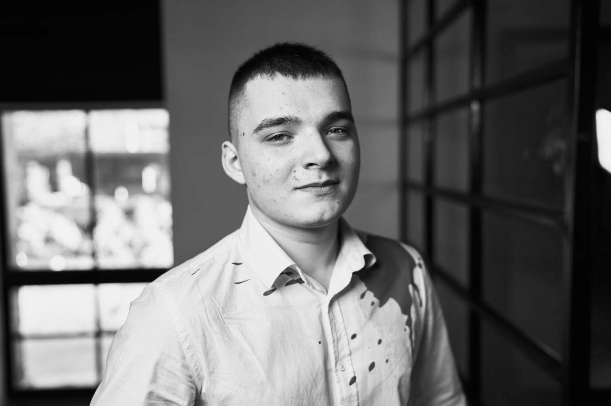

Детальніше про мене

- ФІО: Григоренко Владислав Русланович
- Дата народження: 18 листопада 2004 року
- Вуз: Державний Університет Телекомунікацій
- Кафедра: "Інформаційна та Кібернетична безпека"
- Контактна інформація --> Тел: +38(050)586-04-88 або E-mail: vladgrigorenko45@gmail.com
Біографія
Привіт! Мене звати Владислав, мені 18 років, я з міста Києва. Навчаюся в університеті під назвою
"Державний університет телекомунікацій".
Кафедра "Інформаційна та Кібернетична безпека".
З 7 років я вивчаю англійську мову, та можу вільно спілкуватися нею. Змалку дуже трудолюбивий.
На сьогоднішній день активно займаюся спортом, навчаюся в комп'ютерній школі "Hillel IT School".
Досвід роботи у сфері "Програмування"
"Відсутній"
By V.Cassado